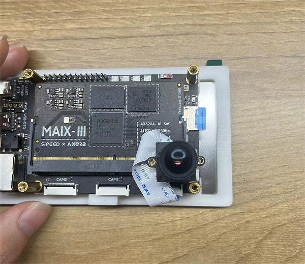
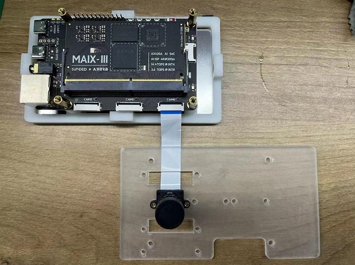
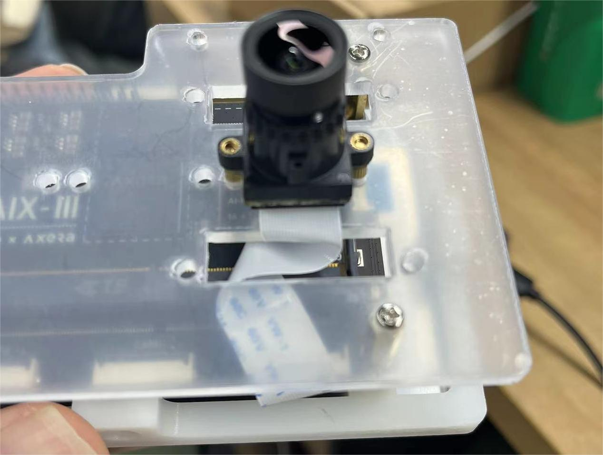
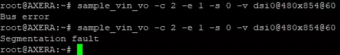

Maix-III 系列 AXera-Pi 常见问题（FAQ）
Q：供电不足怎么办？
A：可以把两根 usb 口接上来供电，板子至少要 USB3.0 1A 的电流才能启动喔！（拉黑 USB2.0 500ma）
Q：被产品电了怎么办？
A：最近冬天静电来了，产品要注意接地喔。
Q：如何更换 os04a10 摄像头？
A：一改参数，二改代码，以下述改动为例：
类似 sample_vin 这类命令改
-c 0就可以启用 os04a10 摄像头，对应-c 2就是默认提供的 gc4653 摄像头。类似于改代码里的
COMMON_SYS_CASE_E eSysCase = SYS_CASE_SINGLE_GC4653;，详细可看components/libmaix/lib/arch/axpi/libmaix_cam/libmaix_cam.cpp#L93
Q：运行摄像头有关程序时报错 i2c_read: Failed to read reg: Remote I/O error.!？
A：摄像头接线是否正确、检查摄像头配置是否与型号相匹配、参数是否修改、启动命令行输入是否出错、以及摄像头是否启动；如果以上都是正确的话，摄像头依旧报错就是硬件问题了。
Q：如何更换其他屏幕？
A：目前默认只提供 5 寸屏幕，支持其他屏幕需要自行修改驱动代码和设备树，以及对应的应用层显示代码。
Q：运行 xxxx menuconfig 时遇到报错 locale.Error: unsupported locale setting !?
A：可以使用 sudo localedef -i en_US -f UTF-8 en_US.UTF-8 恢复一下配置即可。
Q：运行 IPC ODM 命令时报错 VCEncInit:ERROR codecFormat NOT support by HW !?
A：试着按复位键或者是插拔重启设备即可。
Q：运行程序后屏幕显示花屏？
A：查看摄像头型号参数是否配置正确。
Q：运行 ODM 启动命令后报错 i2c_read: Failed to read reg: Remote I/O error.!？
A：修改 run.sh 启动脚本里的摄像头参数，脚本默认参数是 os04a10 摄像头，更换为 gc4653 将 -e 2 -v 0 -c 0 修改为 -v 0 -c 2 即可。
Q：摄像头、屏幕画面反了倒过来了怎么解决？
A：物理旋转。

有装配外壳的 AXera-Pi 可参考以下图例：
 Q：运行命令后报错：Bus Error！？

A：这种情况是 SD 卡质量问题导致掉卡，也就是镜像卡里面的程序崩掉了无法读取到。
- 更换质量好一点的 SD 卡或官方购买镜像卡，可参照
SD卡测试选购合适的卡点击前往查看。
Q：使用 ifconfig -a 查看网络没有 eth0 ip 地址怎么解决？
A：没有联网的话会直接看不到 ip 地址，查看下网线是否有接入、是否接稳了。
- 或使用
dhclient eth0手动启动或参考文档传送门重新配置 ip 获取地址。
Q：运行 uvc 命令后一直报错读取不到设备？
A：这种情况一般会少数出现在 Windows 环境上，查看设备管理器是不是有什么显示异常驱动，卸载后即可使用。
Q：运行 uvc 命令后出现卡住现象？
A：重启即可
Q：开机后 ifconfig 不显示 wlan0 怎么解决？
A：可能是核心板与底板衔接松了，重新插拔核心板与底板可！
Q：使用 ssh 登陆后断开报错：packet_write_wait: Connection to 10.xxx.xxx.xxx port 22: Broken pipe！
A: 运行一下python3 -c "import os, binascii; os.system('sed -i \'/iface eth0 inet dhcp/ahwaddress ether {}\' /etc/network/interfaces'.format(binascii.hexlify(bytes.fromhex(open('/proc/ax_proc/uid').read().split('0x')[1][:-5]),':').decode('iso8859-1'))) if os.system('grep \'hwaddress ether\' /etc/network/interfaces -q') != 0 else exit();" 后重启即可。